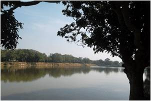
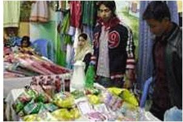

আনুমানিক ৩০০ বছর পূর্বে প্রাচীন রাজা শ্রী কৃষ্ণ ও তার পত্মি দয়াময়ি মন্দির প্রতিষ্ঠা করেন। জামালপুর শহরের জিরো পয়েন্টের কাছে অবস্থিত প্রাচীন মন্দির। প্রাচীন ও আধুনিক স্থাপত্য রীতির সংমিশ্রণে এ মন্দিরটি নির্মিত।
প্রতিবছর অষ্টমী পূজা উপলক্ষ্যে এখানে প্রচুর লোক সমাগম হয়।এখানে প্রাচীন সভ্যতা ও আধুনিক স্থাপত্যের কারকায্যের সংমিশ্রনে এর নির্মাণ কাজ করা হয়।
এখানে হিন্দু সম্প্রদায়ের লোক জন প্রতিদিনই বিভিন্ন পূজা আচর্জণা করে থাকে এবং প্রতি বছর অস্টমী মেলার সময় বিভিন্ন দেবতার নামে মান্নত করা হয়।
মন্দিরটি দেখার জন্য প্রতিদিন অসংখ্য ভক্ত অনুরাগীরা ও দর্শনার্থীগণ এখানে দূর-দূরান্ত থেকে ছুটে আসেন।
এটি জামালপুর সদর উপজেলার শহরের ব্রহ্মপুত্র নদী তীরে ও জামালপুর সদর থানার পাশে ব্রহ্মপুত্র নদের তীরে অবস্থিত। এ অঞ্চলের সাধক পুরুষ হযরত শাহ জামাল-এর (রহঃ) সমাধি।
এটি সমাধিক্ষেত্র ছাড়াও পুরনো একটি সুন্দর মসজিদ আছে।এখানে পাঁচ ওয়াক্ত নামাজ আদায় করা হয়। । জামালপুর সদরে চাপাতলি ঘাট সংলগ্ন হযরত শাহ জামাল (রহ)- এর মাজার শরিফ।
১৫৮৬ খ্রি: সম্রাট আকবরের রাজত্বকালে হযরত শাহ জামাল (রহ) ধর্ম প্রচারের জন্য অত্রাঞ্চলে আগমন করেন। এই সুফি দরবেশ সুদূর মধ্যপ্রাচ্যর ইয়েমেন থেকে এসে খরস্রোতা ব্রহ্মপুত্র নদতীরে আস্তানা স্থাপন করেন।
হযরত শাহ জামাল (রহ) একজন পীর কামেল লোক ছিলেন। তার আধ্যাত্মিক জ্ঞান ও অলৌকিক ক্ষমতার কথা দিল্লির মুঘল দরবার পর্যন্ত পৌছে যায়।
ঐ সময় বাদশা আকবর হযরত শাহ জামাল (রহঃ) এর খানকার ব্যয়ভার বহন করতে ইচ্ছা পোষণ করে এবঙ সিংহজানির অধীনে কয়েকটি পরগনা পীরপাল দানের সনদ পাঠায়।
এই লোভনীয় প্রস্তাব সুফি দরবেশ হযরত শাহ জামাল (রহঃ) অবজ্ঞাভরে প্রত্যাখ্যাণ করেন। পরবর্তীতে তার নামে অত্রাঞ্চলের নামকরণ জামালপুর হয়। এখানে প্রতি বছর ভক্তবৃন্দ সমবেত হয়ে ওরস মাহফিল পালন করেন।
বর্তমানে আধুনিক নির্মাণ শৈলীতে আধুনিকীকরণ করা হয়েছে। এখানে প্রতিদিন অসংখ্য ভক্ত জিয়ারত ও বিভিন্ন উদ্দেশ্যে মান্নতে ছিন্নি দিতে আসে।

খ্রিস্টীয় আষ্টম শতাব্দীতে বৌদ্ধধর্মের বিস্তার রোধ হয়ে হিন্দু ধর্মের পুনরুত্থান হয়। পশ্চিম ময়মনসিংহ অঞ্চলে হিন্দু শাসনামলের ইতিহাস থেকে জানা যায় খ্রিস্টীয় দশম শতাব্দীতে বাংলার পাল বংশের আভবর্ভাব হয়।
এই দশম শতাব্দীর শুরু থেকে একাদশ শতাব্দীর প্রথম পর্যায় পর্যন্ত প্রায় ১২০ বছর কাল পাল রাজাগণ শাসন করতেন।
দশম ও একাদশ শতাব্দীতে ময়মনসিংহের দক্ষিণ অংশ বর্তমান কাপাসিয়ায় শিশুপাল, আটিয়যাতে যশোপাল পশ্চিমাংশে মধুপুরে ভগদত্ত এবং বংশ নদীর পাড়ে রায় পুরায় রাজা হরিশ্চন্দ্র পালের ক্ষুদ্র রাজ্য ছিল।
এখানে উল্লেখ্য যে গুপ্ত বংশের পতনের পর ময়মনসিংহ জেলা কামরূপ রাজ্যের অধীনস্ত হয়। এই রাজ্যটি ছিল পালদের অধীন।
পরে ব্রহ্মপুত্রের পূর্বভাগ কামরূপ ও পশ্চিম ভাগ সেন রাজাদের শাসন ভূক্ত হয়। অত্রাঞ্চলে কিংবদন্তি আছে, জামালপুর চন্দ্রারধীঘিটি রাজা হরিশচন্দ্র পালের রাজত্বকালে খনন করা হয়েছিল।
এই প্রাচীন ধীঘি রাজা হরিশচন্দ্রের দীঘি নামে পরিচিত। দিঘির মনোরম পরিবেশ অঅর বৃক্ষরাজির শোভায় মুগ্ধ হবেন যে কেউ।

জামালপুর সদর হস্তশিল্পের জন্য বিখ্যাত। এ শহরে তাই হস্তশিল্পের বিপণিবিতানও অনেক। জামালপুর সদর শহরের আশেক মাহমুদ কলেজ সড়কে ও মাদ্রাসা সড়কে এরকম অনেক বিক্রয় কেন্দ্র আছে, যেখানে অনেক কম দামে পাওয়া যাবে জামালপুর সদরে বিখ্যাত নকশি কাঁথা ও সূচিকর্মের বিভিন্ন সামগ্রী।